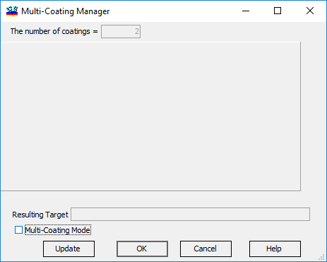
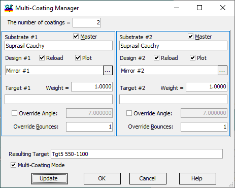
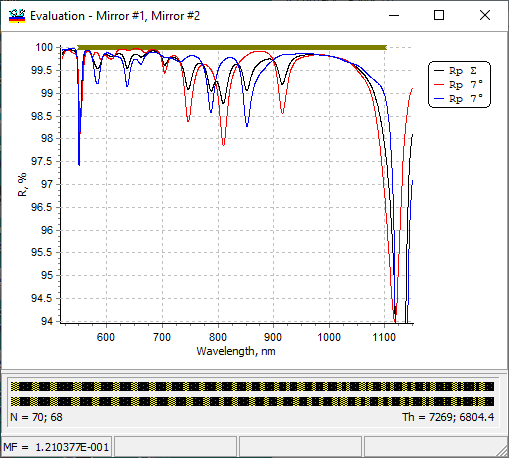
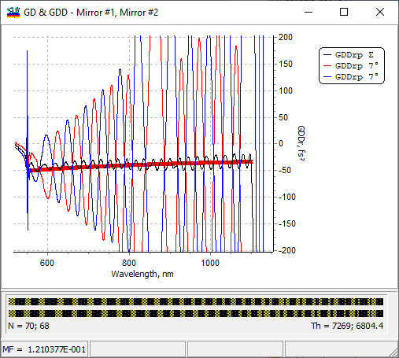
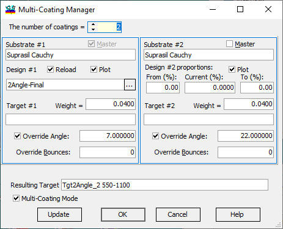
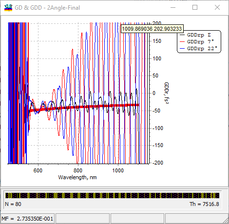

Multi-Coating Manager
Multi-Coating Manager
In order to design complex multi-mirror systems such as dispersive mirrors, pulse compressors, and other elements of ultrafast optics, one needs to consider and optimize systems consisting of several mirrors. For examples, you can refer to the papers:
V. Pervak, A.V.Tikhonravov, M.K.Trubetskov, S. Naumov, F.Krausz, A.Apolonski, “1.5-octave chirped mirror for pulse compression down to sub-3 fs”, Appl. Phys. B 87, 5-12 (2006)
V. Pervak, I. Ahmad, M. Trubetskov, A. Tikhonravov, and F. Krausz, “Double-angle multilayer mirrors with smooth dispersion characteristics,” Opt. Express 17, 7943-7951 (2009).

First of all, it is necessary to activate the Multi-Coating Mode in OptiLayer; otherwise, all other controls are locked. In Multi-Coating Mode, all other controls become available for editing.
|
Note: Up to 10 different coatings can be specified, allowing for the design of extremely complex dispersive mirror compressors. |
Complementary pair configuration

This configuration describes a complementary pair of mirrors working at the same angle of incidence, specified in the Resulting Target file. The number of coatings specifies how many mirrors are considered in this configuration. In the case of a double-angle configuration, this number includes the reflection from a similar window at a different angle of incidence. This number can range from 2 up to 10 in the current version. Once this number is specified, the Multi-Coating Manager is redisplayed with the required number of sub-panels. In each panel, you could specify:
Substrate (select one from the Substrate database)
Design (select one from the Design database)
optional Target (select one from the Target database if necessary). These targets are used to avoid large oscillations in individual reflection curves, and the corresponding weight should usually be less than 1.0, with levels of 0.05 being quite reasonable.
[…] button to the right of the Design name opens the local Design Editor, allowing you to edit each design’s thicknesses directly in memory without saving the designs to the Design database. The optimization target should be specified in the Resulting Target entry field. It uses the efficient values of R and Phase characteristics: RƩ = (R1ˑR2ˑ…ˑRp)1/p, and PhaseƩ = (Phase1 + Phase2 + … + Phasep) / p. Phase characteristics can include just phase, or GD, or GDD. This convention is convenient as it reduces the total performance of the whole system to a single bounce. The Reload check box instructs the Multi-Coating Manager to reload a design from the database if the OK or Update buttons are clicked. The Plot check box activates the presentation of individual Reflectance and Phase curves in the Evaluation windows.
For example, if individual plots are selected for this configuration, we obtain:

and

These evaluation windows clearly demonstrate how this complementary pair suppresses the oscillation of each of the mirrors in the resulting GDD performance.
Double-angle configuration
For the double-angle configuration, it is necessary to disable the Master check box on the second sub-panel of the dialog. In this case, Design 2 will be a Slave design, meaning that its layer thicknesses are entirely defined by the thicknesses of the first Master design to the left.

It is possible to adjust the Slave design proportion of thicknesses expressed as a percentage in the Current field. If a range of values for the Current is specified (From and To fields), the Current proportion value will be included in the Refinement procedure. This case can be considered as the simultaneous deposition of both mirrors in the same run using well-calibrated and properly adjusted differences in deposition rates in different positions in the chamber, for example. If all proportions (Current, From, and To) are zeroes, the thicknesses of the Slave design are exactly equal to the thicknesses of the Master design. The Override Angle check boxes activate the use of angles of incidence different from those specified in the Resulting Target. The values of angles are entered into the related entry fields and then used during the calculation of the reflection at each mirror. In this way, the double-angle case can be described. The Override Bounces option allows for the change in the number of reflections from each of the mirrors. This option is sometimes required for the design of complex dispersive mirror compressors. One of the double-angle solutions is shown below.

Note that in this case, only one mirror cross-section is displayed in the design bar. The oscillation of GDD on each reflection is efficiently suppressed by the utilization of the angular shift in the double-angle configuration.